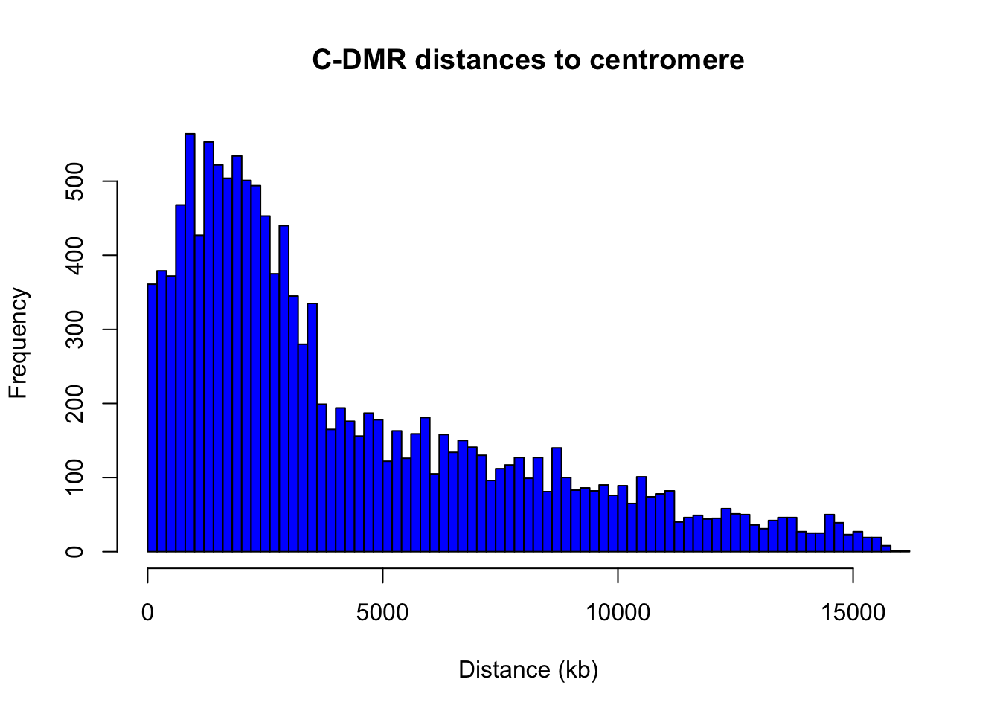
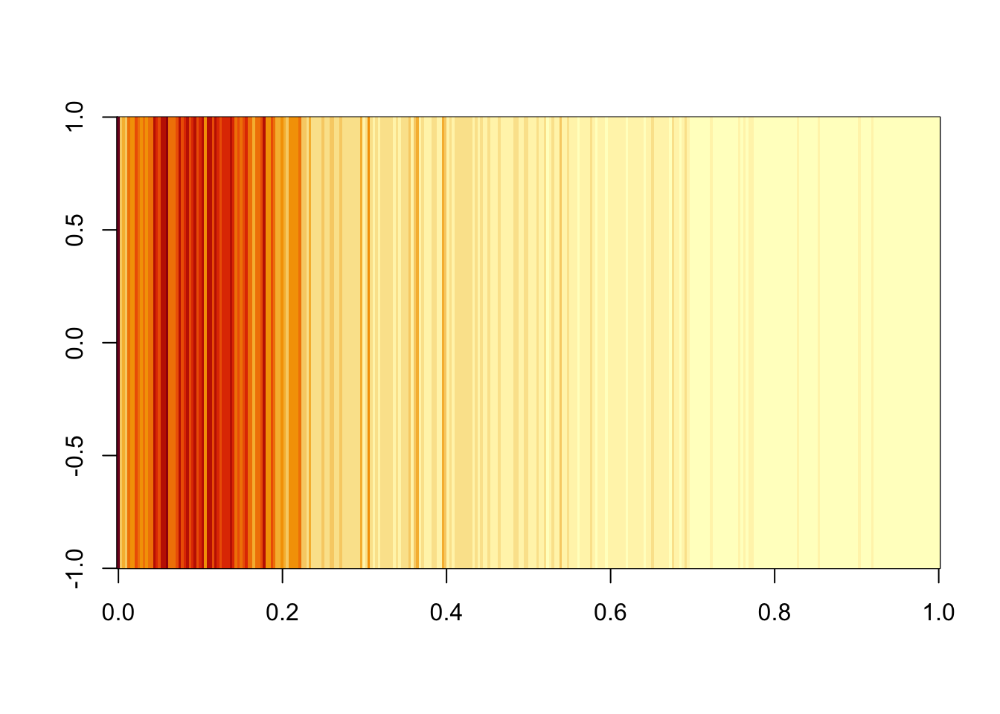
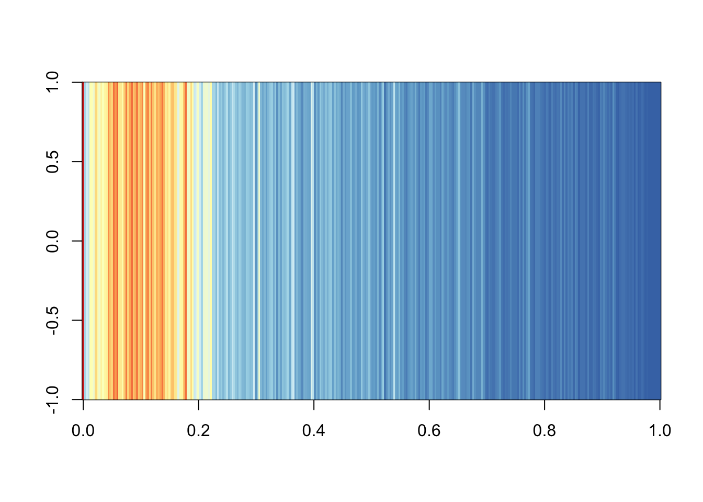
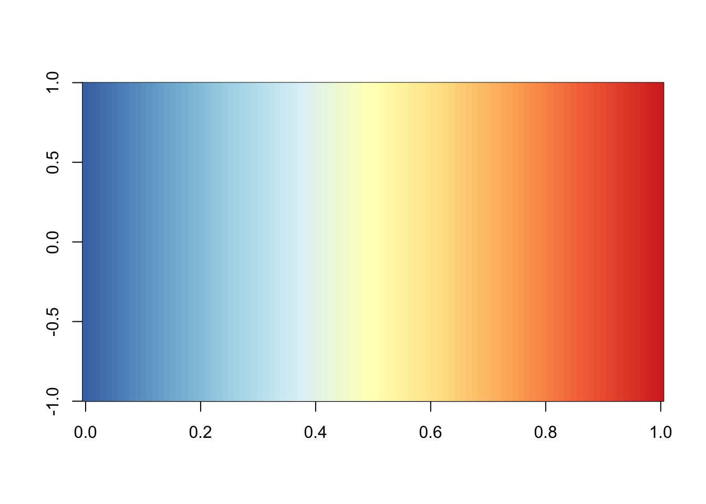
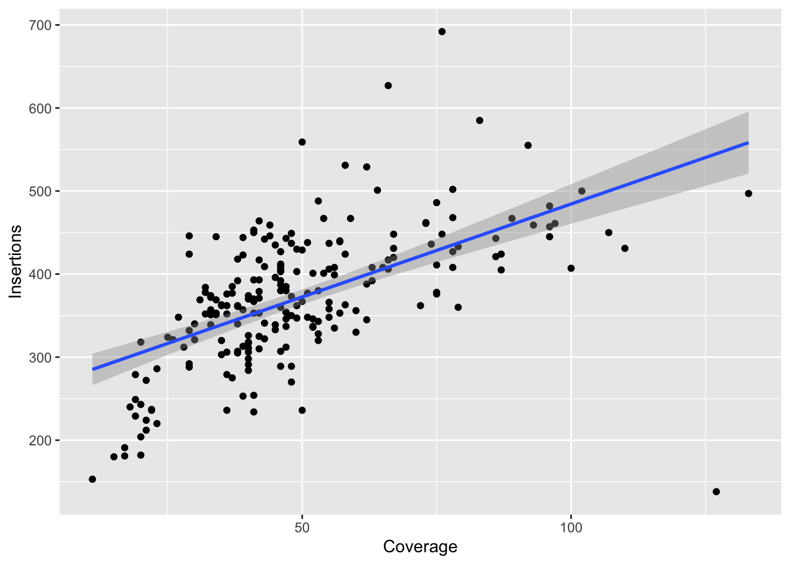
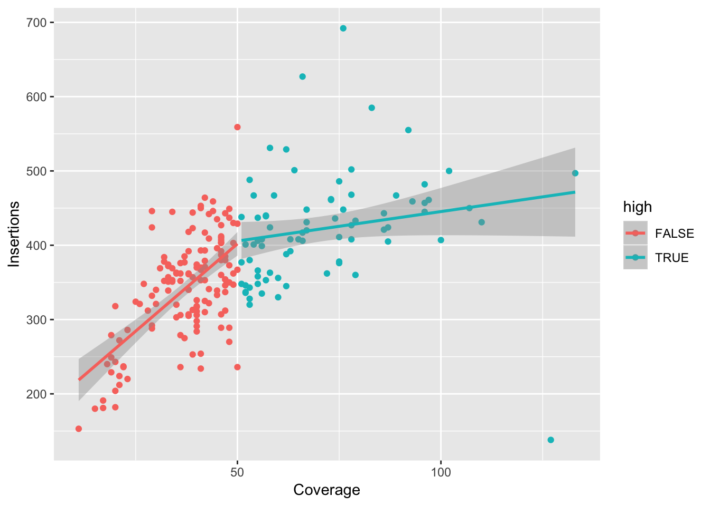
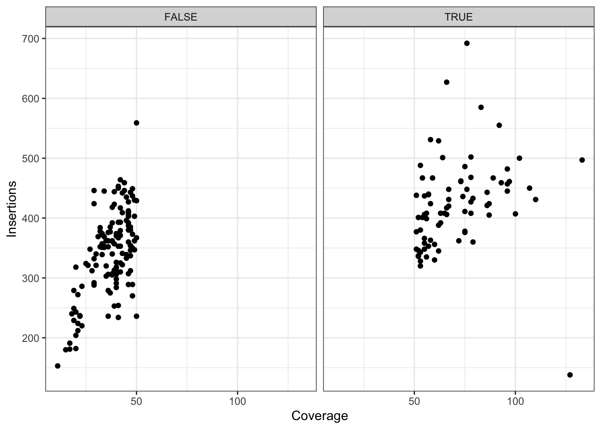
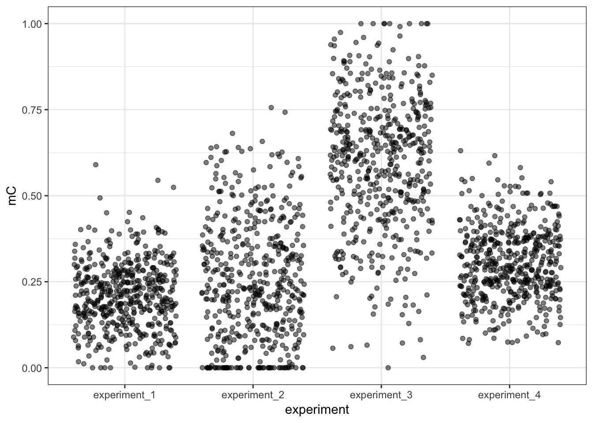
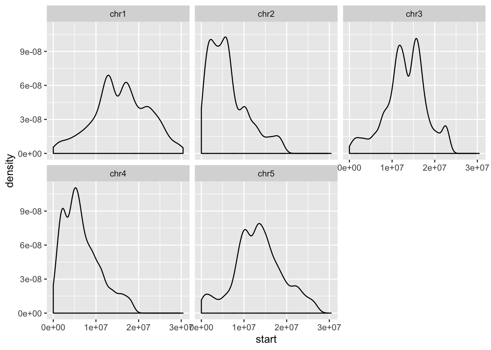
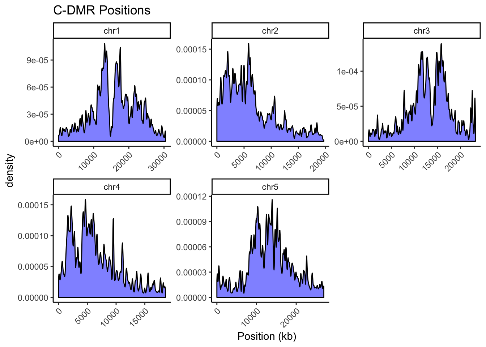

R demo
Getting started
Clone the repo if you haven’t already:
git clone https://github.com/timoast/dac.gitInstall RStudio.
Install the following packages:
install.packages(c("readr", "tidyr", "data.table", "dplyr", "ggplot2"))library(readr)
library(data.table)
library(ggplot2)
library(tidyr)All the following code will assume you are in the directory that holds this file (r_demo.rmd) in the github repo (ie dac/code/).
Importing Data
The readr way
library(readr)
read_tsv("../data/r_demo/coverages.tsv", col_names = c("Accession", "Coverage"))## Parsed with column specification:
## cols(
## Accession = col_character(),
## Coverage = col_double()
## )## # A tibble: 216 x 2
## Accession Coverage
## <chr> <dbl>
## 1 Aa-0 41
## 2 Abd-0 67
## 3 Ag-0 47
## 4 Ak-1 38
## 5 Alst-1 42
## 6 Altai-5 42
## 7 Amel-1 60
## 8 An-1 39
## 9 Ang-0 48
## 10 Anholt-1 53
## # … with 206 more rows# also works for gzipped files
read_tsv("../data/r_demo/mc_data.bed.gz")## Parsed with column specification:
## cols(
## coords = col_character(),
## ins0 = col_double(),
## ins1 = col_double()
## )## # A tibble: 999 x 3
## coords ins0 ins1
## <chr> <dbl> <dbl>
## 1 chr1,8668,8746 0 0.00537
## 2 chr1,17024,18924 0.00519 0.00410
## 3 chr1,18331,18642 0.00372 0.00869
## 4 chr1,23022,23145 0 0.00418
## 5 chr1,55676,56576 0.00417 0.0129
## 6 chr1,69022,69135 0.00823 0.00424
## 7 chr1,69025,69143 0.00348 0.00361
## 8 chr1,69025,69148 0.00278 0.00760
## 9 chr1,69028,69133 0.00549 0
## 10 chr1,76844,77500 0.00328 0.00379
## # … with 989 more rowsThe data.table way
library(data.table)
fread("../data/r_demo/coverages.tsv", header = FALSE, col.names = c("Accession", "Coverage"))## Accession Coverage
## 1: Aa-0 41
## 2: Abd-0 67
## 3: Ag-0 47
## 4: Ak-1 38
## 5: Alst-1 42
## ---
## 212: Ws-2 52
## 213: Wt-5 29
## 214: Yo-0 78
## 215: Zal-1 41
## 216: Zdr-1 19fread("gzip -dc ../data/r_demo/mc_data.bed.gz")## coords ins0 ins1
## 1: chr1,8668,8746 0.000000000 0.005366726
## 2: chr1,17024,18924 0.005193408 0.004104893
## 3: chr1,18331,18642 0.003720434 0.008686003
## 4: chr1,23022,23145 0.000000000 0.004184100
## 5: chr1,55676,56576 0.004172405 0.012852597
## ---
## 995: chr1,12566243,12568303 0.264952130 0.076252087
## 996: chr1,12581911,12582918 0.251092213 0.248537692
## 997: chr1,12584274,12584300 0.082298985 0.096469517
## 998: chr1,12594543,12594591 0.333835719 0.404032186
## 999: chr1,12612939,12613280 0.357346865 0.024760132fread("seq 25 | xargs -n 5 echo")## V1 V2 V3 V4 V5
## 1: 1 2 3 4 5
## 2: 6 7 8 9 10
## 3: 11 12 13 14 15
## 4: 16 17 18 19 20
## 5: 21 22 23 24 25fread("curl https://raw.githubusercontent.com/timoast/Arabidopsis-TE-variants/master/ProcessedData/coverages.tsv")## V1 V2
## 1: Aa-0 41
## 2: Abd-0 67
## 3: Ag-0 47
## 4: Ak-1 38
## 5: Alst-1 42
## ---
## 212: Ws-2 52
## 213: Wt-5 29
## 214: Yo-0 78
## 215: Zal-1 41
## 216: Zdr-1 19fread("bedtools intersect -a ../data/r_demo/a.bed -b ../data/r_demo/b.bed")## V1 V2 V3
## 1: chr1 20 100
## 2: chr1 50 100
## 3: chr1 20 50data.table has lots of other useful functions, see datacamp course
Brief tangent – using fread to eliminate intermediate files
centromere_distance <- fread("bedtools closest -d -a ../data/r_demo/c_dmrs.tsv.gz -b ../data/r_demo/centromere_positions.txt")
hist(centromere_distance$V7 / 1000, breaks = 100, col = "blue",
main = "C-DMR distances to centromere",
xlab = "Distance (kb)")
densities <- hist(centromere_distance$V7, breaks = 500, plot = F)
image(as.matrix(densities$counts))
library(RColorBrewer)
colors <- colorRampPalette(brewer.pal(9,"RdYlBu"))(100)
image(as.matrix(densities$counts), col = rev(colors))
# create a scale bar
image(matrix(seq(100)), col = rev(colors))
Tidying data
Some background: Tidy data, Wickham 2014
Variables go in the columns, observations go in the rows.
Four main operations in tidying data:
- Move observations from the column names to rows
- Move variables from rows to columns
- Separate multiple variables into multiple columns
- Gather single variable from many columns into one column
library(tidyr)
data <- read_tsv("../data/r_demo/experiment.tsv")## Parsed with column specification:
## cols(
## position = col_double(),
## experiment_1 = col_double(),
## experiment_2 = col_double(),
## experiment_3 = col_double(),
## experiment_4 = col_double()
## )data## # A tibble: 500 x 5
## position experiment_1 experiment_2 experiment_3 experiment_4
## <dbl> <dbl> <dbl> <dbl> <dbl>
## 1 1 0.295 0 0.691 0.224
## 2 2 0.262 0.194 0.0300 0.282
## 3 3 0.223 0.170 0.647 0.302
## 4 4 0.186 0.353 0.673 0.208
## 5 5 0.253 0.756 0.525 0.284
## 6 6 0.127 0 0.692 0.340
## 7 7 0.148 0.301 0.199 0.401
## 8 8 0.220 0.133 0.319 0.349
## 9 9 0.189 0.474 0.692 0.415
## 10 10 0.197 0.425 0.992 0.380
## # … with 490 more rowstidy_data <- gather(data, experiment, mC, experiment_1:experiment_4)
tidy_data## # A tibble: 2,000 x 3
## position experiment mC
## <dbl> <chr> <dbl>
## 1 1 experiment_1 0.295
## 2 2 experiment_1 0.262
## 3 3 experiment_1 0.223
## 4 4 experiment_1 0.186
## 5 5 experiment_1 0.253
## 6 6 experiment_1 0.127
## 7 7 experiment_1 0.148
## 8 8 experiment_1 0.220
## 9 9 experiment_1 0.189
## 10 10 experiment_1 0.197
## # … with 1,990 more rowsspread(tidy_data, experiment, mC)## # A tibble: 500 x 5
## position experiment_1 experiment_2 experiment_3 experiment_4
## <dbl> <dbl> <dbl> <dbl> <dbl>
## 1 1 0.295 0 0.691 0.224
## 2 2 0.262 0.194 0.0300 0.282
## 3 3 0.223 0.170 0.647 0.302
## 4 4 0.186 0.353 0.673 0.208
## 5 5 0.253 0.756 0.525 0.284
## 6 6 0.127 0 0.692 0.340
## 7 7 0.148 0.301 0.199 0.401
## 8 8 0.220 0.133 0.319 0.349
## 9 9 0.189 0.474 0.692 0.415
## 10 10 0.197 0.425 0.992 0.380
## # … with 490 more rowsUnite and separate columns
mc <- read_tsv("../data/r_demo/mc_data.bed.gz")## Parsed with column specification:
## cols(
## coords = col_character(),
## ins0 = col_double(),
## ins1 = col_double()
## )head(mc)## # A tibble: 6 x 3
## coords ins0 ins1
## <chr> <dbl> <dbl>
## 1 chr1,8668,8746 0 0.00537
## 2 chr1,17024,18924 0.00519 0.00410
## 3 chr1,18331,18642 0.00372 0.00869
## 4 chr1,23022,23145 0 0.00418
## 5 chr1,55676,56576 0.00417 0.0129
## 6 chr1,69022,69135 0.00823 0.00424# first column has three variables: chromsome, start, end
new_mc <- separate(mc, coords, c("chr", "start", "end"))
new_mc## # A tibble: 999 x 5
## chr start end ins0 ins1
## <chr> <chr> <chr> <dbl> <dbl>
## 1 chr1 8668 8746 0 0.00537
## 2 chr1 17024 18924 0.00519 0.00410
## 3 chr1 18331 18642 0.00372 0.00869
## 4 chr1 23022 23145 0 0.00418
## 5 chr1 55676 56576 0.00417 0.0129
## 6 chr1 69022 69135 0.00823 0.00424
## 7 chr1 69025 69143 0.00348 0.00361
## 8 chr1 69025 69148 0.00278 0.00760
## 9 chr1 69028 69133 0.00549 0
## 10 chr1 76844 77500 0.00328 0.00379
## # … with 989 more rowsunite(new_mc, coords, chr, start, end, sep = ",")## # A tibble: 999 x 3
## coords ins0 ins1
## <chr> <dbl> <dbl>
## 1 chr1,8668,8746 0 0.00537
## 2 chr1,17024,18924 0.00519 0.00410
## 3 chr1,18331,18642 0.00372 0.00869
## 4 chr1,23022,23145 0 0.00418
## 5 chr1,55676,56576 0.00417 0.0129
## 6 chr1,69022,69135 0.00823 0.00424
## 7 chr1,69025,69143 0.00348 0.00361
## 8 chr1,69025,69148 0.00278 0.00760
## 9 chr1,69028,69133 0.00549 0
## 10 chr1,76844,77500 0.00328 0.00379
## # … with 989 more rowsManipulating data
The dplyr package:
* filter rows
* select columns
* mutate columns
* arrange rows
* group_by variables
library(dplyr)##
## Attaching package: 'dplyr'## The following objects are masked from 'package:data.table':
##
## between, first, last## The following objects are masked from 'package:stats':
##
## filter, lag## The following objects are masked from 'package:base':
##
## intersect, setdiff, setequal, union# from earlier
coverages <- read_tsv("../data/r_demo/coverages.tsv", col_names = c("Accession", "Coverage"))## Parsed with column specification:
## cols(
## Accession = col_character(),
## Coverage = col_double()
## )# use mutate to create new columns
cov <- mutate(coverages, high = Coverage > 50)
cov## # A tibble: 216 x 3
## Accession Coverage high
## <chr> <dbl> <lgl>
## 1 Aa-0 41 FALSE
## 2 Abd-0 67 TRUE
## 3 Ag-0 47 FALSE
## 4 Ak-1 38 FALSE
## 5 Alst-1 42 FALSE
## 6 Altai-5 42 FALSE
## 7 Amel-1 60 TRUE
## 8 An-1 39 FALSE
## 9 Ang-0 48 FALSE
## 10 Anholt-1 53 TRUE
## # … with 206 more rows# group rows by common variables
cov <- group_by(cov, high)
cov <- mutate(cov, group_average = mean(Coverage))
cov## # A tibble: 216 x 4
## # Groups: high [2]
## Accession Coverage high group_average
## <chr> <dbl> <lgl> <dbl>
## 1 Aa-0 41 FALSE 37.3
## 2 Abd-0 67 TRUE 70.8
## 3 Ag-0 47 FALSE 37.3
## 4 Ak-1 38 FALSE 37.3
## 5 Alst-1 42 FALSE 37.3
## 6 Altai-5 42 FALSE 37.3
## 7 Amel-1 60 TRUE 70.8
## 8 An-1 39 FALSE 37.3
## 9 Ang-0 48 FALSE 37.3
## 10 Anholt-1 53 TRUE 70.8
## # … with 206 more rows# use select to choose columns
select(cov, Accession, group_average)## Adding missing grouping variables: `high`## # A tibble: 216 x 3
## # Groups: high [2]
## high Accession group_average
## <lgl> <chr> <dbl>
## 1 FALSE Aa-0 37.3
## 2 TRUE Abd-0 70.8
## 3 FALSE Ag-0 37.3
## 4 FALSE Ak-1 37.3
## 5 FALSE Alst-1 37.3
## 6 FALSE Altai-5 37.3
## 7 TRUE Amel-1 70.8
## 8 FALSE An-1 37.3
## 9 FALSE Ang-0 37.3
## 10 TRUE Anholt-1 70.8
## # … with 206 more rows# won't let you drop a column if the data is grouped by that column
cov <- ungroup(cov)
select(cov, Accession, group_average)## # A tibble: 216 x 2
## Accession group_average
## <chr> <dbl>
## 1 Aa-0 37.3
## 2 Abd-0 70.8
## 3 Ag-0 37.3
## 4 Ak-1 37.3
## 5 Alst-1 37.3
## 6 Altai-5 37.3
## 7 Amel-1 70.8
## 8 An-1 37.3
## 9 Ang-0 37.3
## 10 Anholt-1 70.8
## # … with 206 more rows# can alse choose what NOT to include
select(cov, -high)## # A tibble: 216 x 3
## Accession Coverage group_average
## <chr> <dbl> <dbl>
## 1 Aa-0 41 37.3
## 2 Abd-0 67 70.8
## 3 Ag-0 47 37.3
## 4 Ak-1 38 37.3
## 5 Alst-1 42 37.3
## 6 Altai-5 42 37.3
## 7 Amel-1 60 70.8
## 8 An-1 39 37.3
## 9 Ang-0 48 37.3
## 10 Anholt-1 53 70.8
## # … with 206 more rows# sort using arrange
arrange(cov, Coverage)## # A tibble: 216 x 4
## Accession Coverage high group_average
## <chr> <dbl> <lgl> <dbl>
## 1 Koln 11 FALSE 37.3
## 2 Se-0 15 FALSE 37.3
## 3 Ra-0 17 FALSE 37.3
## 4 Wei-0 17 FALSE 37.3
## 5 Old-1 18 FALSE 37.3
## 6 Pu2-8 19 FALSE 37.3
## 7 Ragl-1 19 FALSE 37.3
## 8 Zdr-1 19 FALSE 37.3
## 9 Bg-2 20 FALSE 37.3
## 10 Buckhorn-Pass 20 FALSE 37.3
## # … with 206 more rowsarrange(cov, desc(Coverage))## # A tibble: 216 x 4
## Accession Coverage high group_average
## <chr> <dbl> <lgl> <dbl>
## 1 Br-0 133 TRUE 70.8
## 2 Lan-0 127 TRUE 70.8
## 3 Kb-0 110 TRUE 70.8
## 4 El-0 107 TRUE 70.8
## 5 La-0 102 TRUE 70.8
## 6 Kl-5 100 TRUE 70.8
## 7 Kar-1 97 TRUE 70.8
## 8 Gel-1 96 TRUE 70.8
## 9 Nok-3 96 TRUE 70.8
## 10 Rennes-1 96 TRUE 70.8
## # … with 206 more rows# useful for coordinates
dmrs <- read_tsv("../data/r_demo/c_dmrs.tsv.gz", col_names = c("chr", "start", "end"))## Parsed with column specification:
## cols(
## chr = col_character(),
## start = col_double(),
## end = col_double()
## )dmrs## # A tibble: 13,484 x 3
## chr start end
## <chr> <dbl> <dbl>
## 1 chr1 792 911
## 2 chr1 22665 22807
## 3 chr1 41392 41445
## 4 chr1 71457 71476
## 5 chr1 76839 77252
## 6 chr1 193333 193525
## 7 chr1 255844 255893
## 8 chr1 291887 291998
## 9 chr1 355668 356037
## 10 chr1 428072 428073
## # … with 13,474 more rowsarrange(dmrs, chr, desc(start))## # A tibble: 13,484 x 3
## chr start end
## <chr> <dbl> <dbl>
## 1 chr1 30417725 30417837
## 2 chr1 30416592 30416901
## 3 chr1 30416104 30416138
## 4 chr1 30391058 30391076
## 5 chr1 30390110 30390285
## 6 chr1 30388868 30389254
## 7 chr1 30388263 30388288
## 8 chr1 30376878 30377010
## 9 chr1 30345730 30346096
## 10 chr1 30295026 30295310
## # … with 13,474 more rowsJoining tables
dplyr also has join functions.

te_insertion_counts <- read_tsv("../data/r_demo/insertion_counts.tsv", col_names = c("Accession", "Insertions"))## Parsed with column specification:
## cols(
## Accession = col_character(),
## Insertions = col_double()
## )left_join(coverages, te_insertion_counts)## Joining, by = "Accession"## # A tibble: 216 x 3
## Accession Coverage Insertions
## <chr> <dbl> <dbl>
## 1 Aa-0 41 367
## 2 Abd-0 67 420
## 3 Ag-0 47 443
## 4 Ak-1 38 305
## 5 Alst-1 42 379
## 6 Altai-5 42 417
## 7 Amel-1 60 330
## 8 An-1 39 313
## 9 Ang-0 48 350
## 10 Anholt-1 53 343
## # … with 206 more rowsPut it all together
In unix, the pipe lets you use output from one program/function as input to another. This lets you chain together commands an eliminate intermediate files. It also provides the ability to start one process before the previous has finished. For example you can pipe the output of bowtie into samtools and convert straight to bam without having to wait for the mapping to finish.
The same can be done in R with any function that takes and returns a dataframe. In unix the pipe character is |, in R it is %>%. The pipe is part of the magrittr package, but is also loaded any time you load readr, dplyr, or tidyr.
df <- read_tsv("../data/r_demo/coverages.tsv", col_names = c("Accession", "Coverage")) %>%
mutate(high = Coverage > 50) %>%
group_by(high) %>%
mutate(group_av = mean(Coverage)) %>%
left_join(te_insertion_counts)## Parsed with column specification:
## cols(
## Accession = col_character(),
## Coverage = col_double()
## )## Joining, by = "Accession"df## # A tibble: 216 x 5
## # Groups: high [2]
## Accession Coverage high group_av Insertions
## <chr> <dbl> <lgl> <dbl> <dbl>
## 1 Aa-0 41 FALSE 37.3 367
## 2 Abd-0 67 TRUE 70.8 420
## 3 Ag-0 47 FALSE 37.3 443
## 4 Ak-1 38 FALSE 37.3 305
## 5 Alst-1 42 FALSE 37.3 379
## 6 Altai-5 42 FALSE 37.3 417
## 7 Amel-1 60 TRUE 70.8 330
## 8 An-1 39 FALSE 37.3 313
## 9 Ang-0 48 FALSE 37.3 350
## 10 Anholt-1 53 TRUE 70.8 343
## # … with 206 more rowsPlotting
library(ggplot2)
ggplot(df, aes(Coverage, Insertions)) +
geom_point() + geom_smooth(method = "lm")
ggplot(df, aes(Coverage, Insertions, color = high)) +
geom_point() + geom_smooth(method = "lm")
ggplot(df, aes(Coverage, Insertions)) +
geom_point() + facet_wrap(~high) +
theme_bw()
ggplot(tidy_data, aes(experiment, mC)) +
geom_jitter(alpha = 0.5) + theme_bw()
Easily create interactive graphics
library(plotly)##
## Attaching package: 'plotly'## The following object is masked from 'package:ggplot2':
##
## last_plot## The following object is masked from 'package:stats':
##
## filter## The following object is masked from 'package:graphics':
##
## layoutp <- ggplot(df, aes(Coverage, Insertions, label=Accession)) +
geom_point() +
theme_bw()
ggplotly(p)# from earlier
dmrs## # A tibble: 13,484 x 3
## chr start end
## <chr> <dbl> <dbl>
## 1 chr1 792 911
## 2 chr1 22665 22807
## 3 chr1 41392 41445
## 4 chr1 71457 71476
## 5 chr1 76839 77252
## 6 chr1 193333 193525
## 7 chr1 255844 255893
## 8 chr1 291887 291998
## 9 chr1 355668 356037
## 10 chr1 428072 428073
## # … with 13,474 more rowsggplot(dmrs, aes(start)) +
geom_density() + facet_wrap(~chr)
# cleaned up
ggplot(dmrs, aes(start/1000)) +
geom_density(adjust = 1/10, fill = "blue", alpha = 0.5) +
facet_wrap(~chr, scales = "free") + theme_classic() +
xlab("Position (kb)") + ggtitle("C-DMR Positions") +
theme(axis.text.x = element_text(angle = 45, hjust = 1))
Reporting
Use RMarkdown (included in RStudio). Press Knit HTML / Knit PDF to render the output document.
Displaying nice tables
# from before
data## # A tibble: 500 x 5
## position experiment_1 experiment_2 experiment_3 experiment_4
## <dbl> <dbl> <dbl> <dbl> <dbl>
## 1 1 0.295 0 0.691 0.224
## 2 2 0.262 0.194 0.0300 0.282
## 3 3 0.223 0.170 0.647 0.302
## 4 4 0.186 0.353 0.673 0.208
## 5 5 0.253 0.756 0.525 0.284
## 6 6 0.127 0 0.692 0.340
## 7 7 0.148 0.301 0.199 0.401
## 8 8 0.220 0.133 0.319 0.349
## 9 9 0.189 0.474 0.692 0.415
## 10 10 0.197 0.425 0.992 0.380
## # … with 490 more rows# using kable
head(data) %>% knitr::kable()| position | experiment_1 | experiment_2 | experiment_3 | experiment_4 |
|---|---|---|---|---|
| 1 | 0.2947252 | 0.0000000 | 0.6905627 | 0.2240412 |
| 2 | 0.2624428 | 0.1944636 | 0.0299559 | 0.2823043 |
| 3 | 0.2227268 | 0.1696682 | 0.6465708 | 0.3024177 |
| 4 | 0.1863447 | 0.3532347 | 0.6733737 | 0.2075265 |
| 5 | 0.2532761 | 0.7560800 | 0.5250720 | 0.2844748 |
| 6 | 0.1269957 | 0.0000000 | 0.6915689 | 0.3399855 |
Code block options
Can choose to show everything, show only output (eg plots), show nothing, show only warnings, etc..
Output options
Output can be rendered as html, pdf, or word. You can also choose a theme, and whether to show a table of contents. One important feature is the ability to have self-contained html documents by including self_contained: true in the rmarkdown header. This will let you send the html file to others and still have all the plots appear correct. This should be set as the default for html output.
Running code in other languages
It is possible to have code chunks that run in languages other than R. If you look at the first code chunk in this document, you will see that it runs a shell command (git). To find out more, read about language engines in knitr.
Here is an example running python:
chromosomes = ["chr" + str(i) for i in xrange(1, 6)]
print(chromosomes)## ['chr1', 'chr2', 'chr3', 'chr4', 'chr5']To use objects created by running code in other languages (for example, if we wanted to use the chromosomes variable created in the above python chunk), you will usually need to write the results to a file and then read into R from the file. There are complicated environment variable things you can do to share objects between languages, but these may not be worth the extra effort.
Further reading
Session info
devtools::session_info()## ─ Session info ──────────────────────────────────────────────────────────
## setting value
## version R version 3.5.3 (2019-03-11)
## os macOS Mojave 10.14.4
## system x86_64, darwin18.2.0
## ui unknown
## language (EN)
## collate en_AU.UTF-8
## ctype en_AU.UTF-8
## tz America/New_York
## date 2019-04-12
##
## ─ Packages ──────────────────────────────────────────────────────────────
## package * version date lib source
## assertthat 0.2.0 2017-04-11 [1] CRAN (R 3.5.0)
## backports 1.1.3 2018-12-14 [1] CRAN (R 3.5.1)
## blogdown 0.10 2019-01-09 [1] CRAN (R 3.5.2)
## bookdown 0.9 2018-12-21 [1] CRAN (R 3.5.2)
## Cairo 1.5-9 2015-09-26 [1] CRAN (R 3.5.1)
## callr 3.1.1 2018-12-21 [1] CRAN (R 3.5.2)
## cli 1.0.1 2018-09-25 [1] CRAN (R 3.5.1)
## colorspace 1.4-0 2019-01-13 [1] CRAN (R 3.5.2)
## crayon 1.3.4 2017-09-16 [1] CRAN (R 3.5.0)
## crosstalk 1.0.0 2016-12-21 [1] CRAN (R 3.5.0)
## data.table * 1.12.0 2019-01-13 [1] CRAN (R 3.5.2)
## desc 1.2.0 2018-05-01 [1] CRAN (R 3.5.1)
## devtools 2.0.1 2018-10-26 [1] CRAN (R 3.5.1)
## digest 0.6.18 2018-10-10 [1] CRAN (R 3.5.1)
## dplyr * 0.8.0.1 2019-02-15 [1] CRAN (R 3.5.2)
## evaluate 0.13 2019-02-12 [1] CRAN (R 3.5.2)
## fansi 0.4.0 2018-10-05 [1] CRAN (R 3.5.1)
## fs 1.2.6 2018-08-23 [1] CRAN (R 3.5.1)
## ggplot2 * 3.1.0 2018-10-25 [1] CRAN (R 3.5.1)
## glue 1.3.0 2018-07-17 [1] CRAN (R 3.5.1)
## gtable 0.2.0 2016-02-26 [1] CRAN (R 3.5.0)
## highr 0.7 2018-06-09 [1] CRAN (R 3.5.0)
## hms 0.4.2 2018-03-10 [1] CRAN (R 3.5.0)
## htmltools 0.3.6 2017-04-28 [1] CRAN (R 3.5.0)
## htmlwidgets 1.3 2018-09-30 [1] CRAN (R 3.5.1)
## httpuv 1.4.5.1 2018-12-18 [1] CRAN (R 3.5.1)
## httr 1.4.0 2018-12-11 [1] CRAN (R 3.5.1)
## jsonlite 1.6 2018-12-07 [1] CRAN (R 3.5.1)
## knitr 1.21 2018-12-10 [1] CRAN (R 3.5.1)
## labeling 0.3 2014-08-23 [1] CRAN (R 3.5.0)
## later 0.8.0 2019-02-11 [1] CRAN (R 3.5.2)
## lattice 0.20-38 2018-11-04 [2] CRAN (R 3.5.3)
## lazyeval 0.2.1 2017-10-29 [1] CRAN (R 3.5.0)
## magrittr 1.5 2014-11-22 [1] CRAN (R 3.5.0)
## Matrix 1.2-15 2018-11-01 [2] CRAN (R 3.5.3)
## memoise 1.1.0 2017-04-21 [1] CRAN (R 3.5.0)
## mime 0.6 2018-10-05 [1] CRAN (R 3.5.1)
## munsell 0.5.0 2018-06-12 [1] CRAN (R 3.5.0)
## pillar 1.3.1 2018-12-15 [1] CRAN (R 3.5.1)
## pkgbuild 1.0.2 2018-10-16 [1] CRAN (R 3.5.1)
## pkgconfig 2.0.2 2018-08-16 [1] CRAN (R 3.5.1)
## pkgload 1.0.2 2018-10-29 [1] CRAN (R 3.5.1)
## plotly * 4.8.0 2018-07-20 [1] CRAN (R 3.5.1)
## plyr 1.8.4 2016-06-08 [1] CRAN (R 3.5.0)
## prettyunits 1.0.2 2015-07-13 [1] CRAN (R 3.5.0)
## processx 3.2.1 2018-12-05 [1] CRAN (R 3.5.1)
## promises 1.0.1 2018-04-13 [1] CRAN (R 3.5.0)
## ps 1.3.0 2018-12-21 [1] CRAN (R 3.5.2)
## purrr 0.3.0 2019-01-27 [1] CRAN (R 3.5.2)
## R6 2.4.0 2019-02-14 [1] CRAN (R 3.5.2)
## RColorBrewer * 1.1-2 2014-12-07 [1] CRAN (R 3.5.0)
## Rcpp 1.0.0 2018-11-07 [1] CRAN (R 3.5.1)
## readr * 1.3.1 2018-12-21 [1] CRAN (R 3.5.2)
## remotes 2.0.2 2018-10-30 [1] CRAN (R 3.5.1)
## reticulate 1.11 2019-02-27 [1] CRAN (R 3.5.2)
## rlang 0.3.1 2019-01-08 [1] CRAN (R 3.5.2)
## rmarkdown 1.11 2018-12-08 [1] CRAN (R 3.5.2)
## rprojroot 1.3-2 2018-01-03 [1] CRAN (R 3.5.1)
## rstudioapi 0.9.0 2019-01-09 [1] CRAN (R 3.5.2)
## scales 1.0.0 2018-08-09 [1] CRAN (R 3.5.1)
## sessioninfo 1.1.1 2018-11-05 [1] CRAN (R 3.5.1)
## shiny 1.2.0 2018-11-02 [1] CRAN (R 3.5.1)
## stringi 1.3.1 2019-02-13 [1] CRAN (R 3.5.2)
## stringr 1.4.0 2019-02-10 [1] CRAN (R 3.5.2)
## testthat 2.0.1 2018-10-13 [1] CRAN (R 3.5.1)
## tibble 2.0.1 2019-01-12 [1] CRAN (R 3.5.2)
## tidyr * 0.8.3 2019-03-01 [1] CRAN (R 3.5.2)
## tidyselect 0.2.5 2018-10-11 [1] CRAN (R 3.5.1)
## usethis 1.4.0 2018-08-14 [1] CRAN (R 3.5.1)
## utf8 1.1.4 2018-05-24 [1] CRAN (R 3.5.0)
## viridisLite 0.3.0 2018-02-01 [1] CRAN (R 3.5.0)
## withr 2.1.2 2018-03-15 [1] CRAN (R 3.5.0)
## xfun 0.5 2019-02-20 [1] CRAN (R 3.5.2)
## xtable 1.8-3 2018-08-29 [1] CRAN (R 3.5.1)
## yaml 2.2.0 2018-07-25 [1] CRAN (R 3.5.1)
##
## [1] /usr/local/lib/R/3.5/site-library
## [2] /usr/local/Cellar/r/3.5.3/lib/R/library